МЕСТО
Человек с бульвара Капуцинов

Это кино меняет людей (в прямом и переносном смысле). Прекрасная игра Андрея Миронова и Михаила Боярского и хорошо отыгранные драки.
Рейтинг начинается с последнего места. Первое место находится в самом конце страницы — прокручивай вниз, чтобы постепенно открыть весь топ.
Это кино меняет людей (в прямом и переносном смысле). Прекрасная игра Андрея Миронова и Михаила Боярского и хорошо отыгранные драки.

Пафосная экранизация романа Дюма с крутыми декорациями и превосходной операторской работой. Несмотря на продолжительность, фильм не кажется затянутым благодаря динамичному сюжету.

Шпионский фильм с Томом Крузом с захватывающим сюжетом. Настоящие трюки Тома Круза стали одной из причин популярности серии. Стоит отметить и заглавную мелодию.
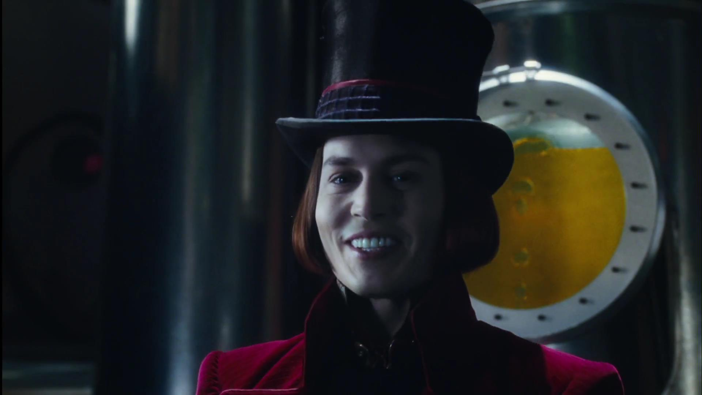
Фильм про лучшего кондитера в мире. Здесь есть сказочность, эксцентричность Джонни Деппа в роли Вилли Вонки и трогательный образ Чарли.
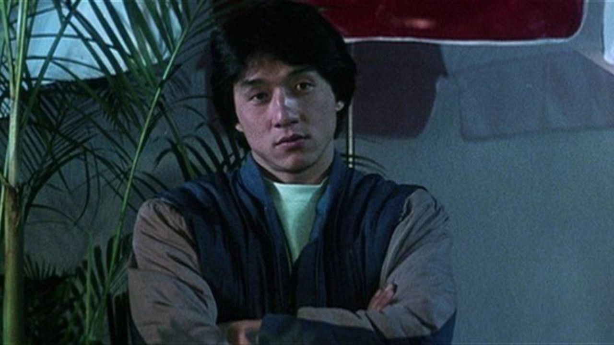
Полицейскому Кевину поручают охрану секретарши преступника. Превосходно поставленный фильм с Джеки Чаном; особенно выделяются драки.

Инновационный фильм про мультяшек: смесь детективного нуара, пародии и абсурдной комедии. Персонажи — изюминка фильма.
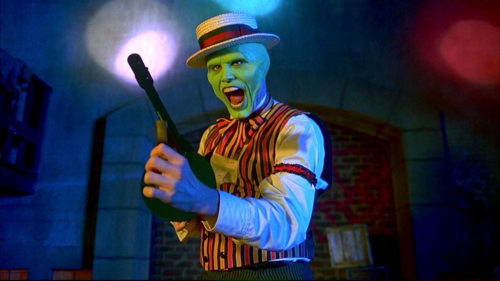
Комедия с Джимом Керри в роли мультяшного безумца. Обилие сатиры, отсылок и шуток; каждая сцена вызывает улыбку.

Комедия Леонида Гайдая по повести Булгакова. Эталон советского кинематографа и советский «Назад в будущее».

Этот фильм, наверное, знают абсолютно все. Каждый смотрел его на Новый год. Любим его за все проделки Кевина над ворами.
Обилие экшена и юмора — то, что фильм смог отлично совместить. Российский проект, который выглядит как большой супергеройский фильм.

Экранизация легендарной игры Minecraft: крутая игра Джека Блэка, шутки и ламповая атмосфера игры.

Запутанная история о принятии себя в комедийной обёртке. Гэри Олдмэн прекрасно отыграл своего персонажа.
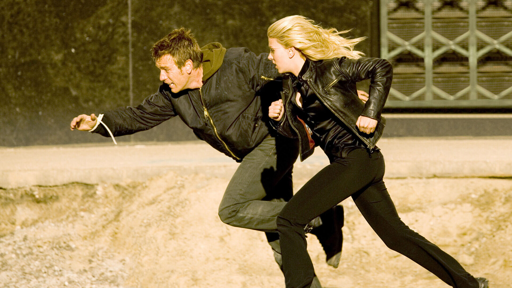
Динамичный фильм Майкла Бэя о предательстве и правде. Иэн Маккеллен и Скарлетт Йоханссон прекрасно отыграли свои роли.
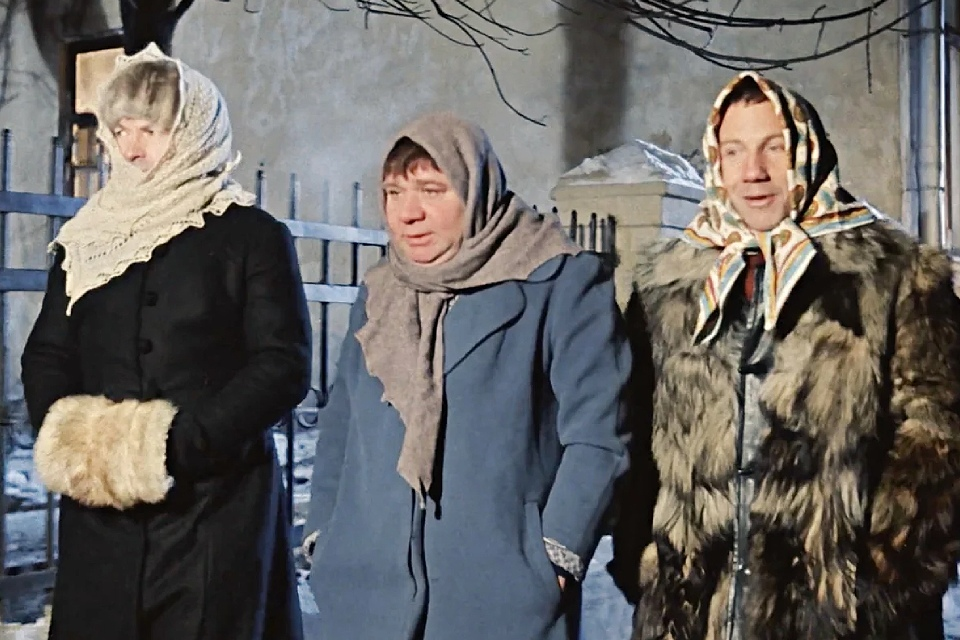
Умопомрачительный фильм про полицейского под прикрытием. Суперсмешная комедия, разобранная на цитаты.
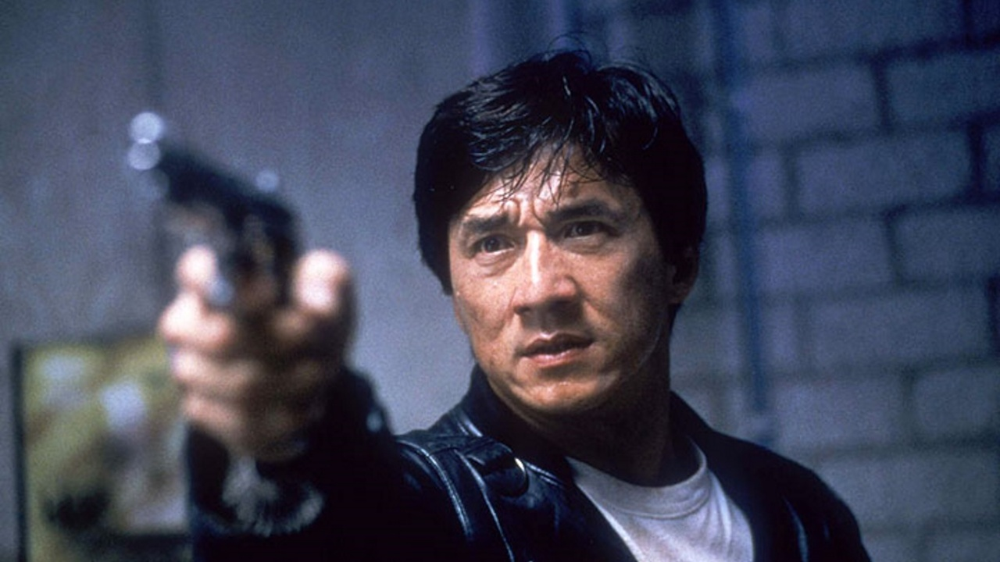
Напряжённый фильм с Джеки Чаном, где потеря памяти главного героя создаёт интригу. Особенно запоминаются финальная сцена на крыше и трюк Джеки Чана.

Команда фокусников проворачивает аферы и грабит банки. Фильмы сочетают напряжённую атмосферу с запутанными фокусами.
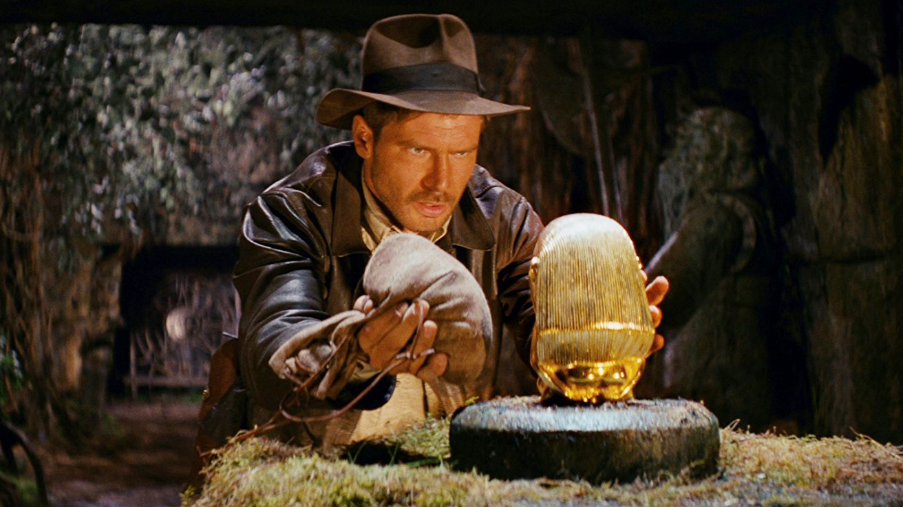
Приключение на все времена. Учёный с хлыстом, которого сыграл Харрисон Форд, ищет давно потерянный ковчег.

Рассеянный Семён Семёнович с бриллиантами в руке убегает от злоумышленников. Андрей Миронов и Анатолий Папанов создают великолепный дуэт.

Фильм Disney создал легендарных пиратов и их головокружительные приключения. Запоминаются роль Джонни Деппа и костюмы.
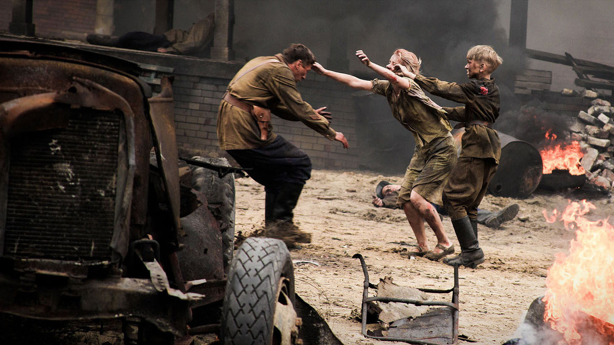
Любимый военный фильм автора. Режиссёр передал ощущение войны, а актёры и спецэффекты произвели сильное впечатление.

Задорное кино с Джеки Чаном и Крисом Такером, после которого ещё долго вспоминаешь шутки.
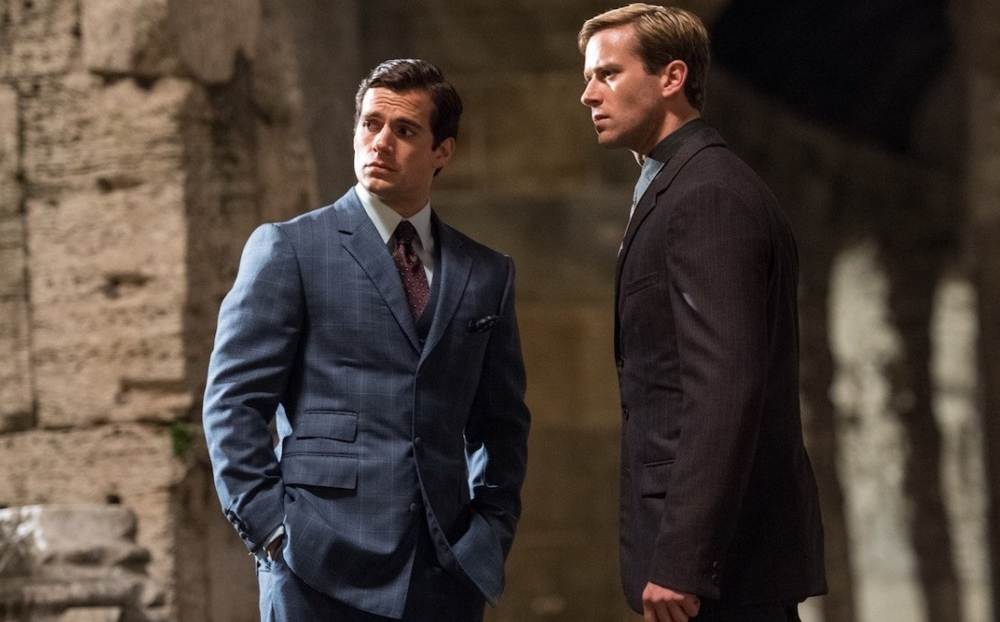
Уморительный фильм о приключениях двух агентов на секретной миссии. Особенно выделяется химия между главными героями.
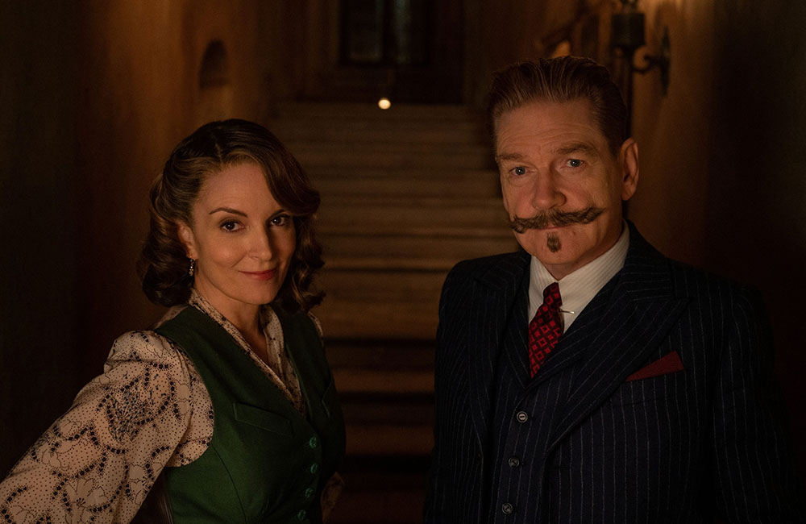
Изумительно поставленный фильм про Эркюля Пуаро, который сочетает детектив и элементы ужастика.

Чёрно-белая кинокомедия про честного угонщика машин Юрия Деточкина с отличной погоней и уморительными сценами.
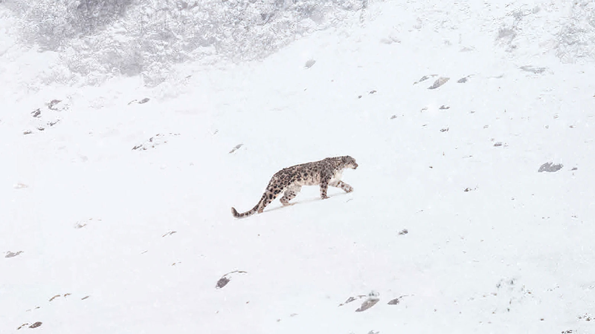
Красивый документальный фильм о путешественниках, которые ищут снежного барса в горах Тибета.

Уморительная комедия Уэса Андерсона с ламповым стилем, прекрасным актёрским составом и хорошо прописанными персонажами.

Очень трогательный фильм о взаимосвязи собаки и хозяина. Автор советует запастись салфетками.

Фэнтезийный фильм Тима Бёртона. Картина похожа на фантазию ребёнка и уделяет много внимания отношениям отца и сына.

Научно-фантастический фильм про виртуальную реальность с мрачной атмосферой, детективным сюжетом и стилистикой нуара.

Захватывающий фильм с механикой «Дня сурка»: спецагент должен вычислить террориста за восемь минут.
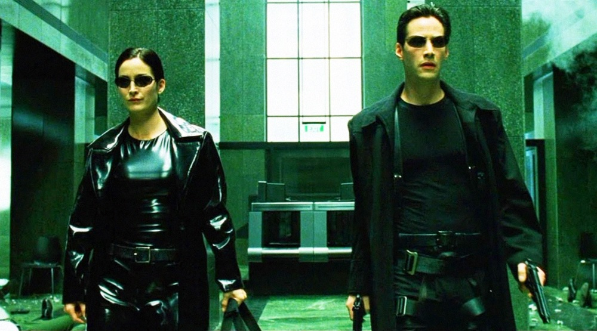
Запутанный фильм с Киану Ривзом о ненастоящей реальности, который оставляет много вопросов.
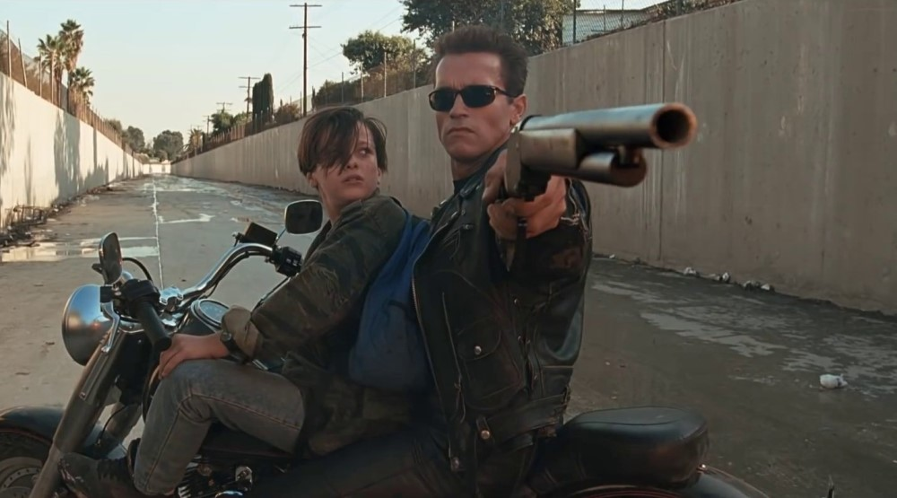
Пафос, сеттинг и сюжет делают дилогию особенной. Автор отдельно вспоминает знаменитую фразу «I'll be back».

Мрачная история Готэма. Автор отмечает трилогию Нолана и особенно Джокера в исполнении Хита Леджера.
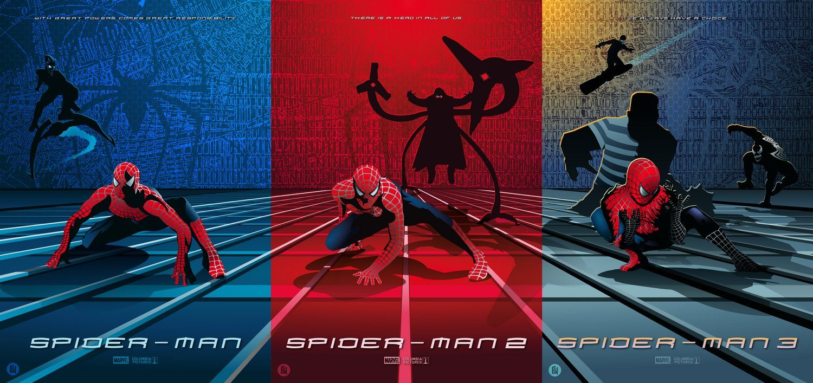
Одна из любимых супергеройских трилогий автора: захватывающий сюжет, игра актёров и операторская работа.
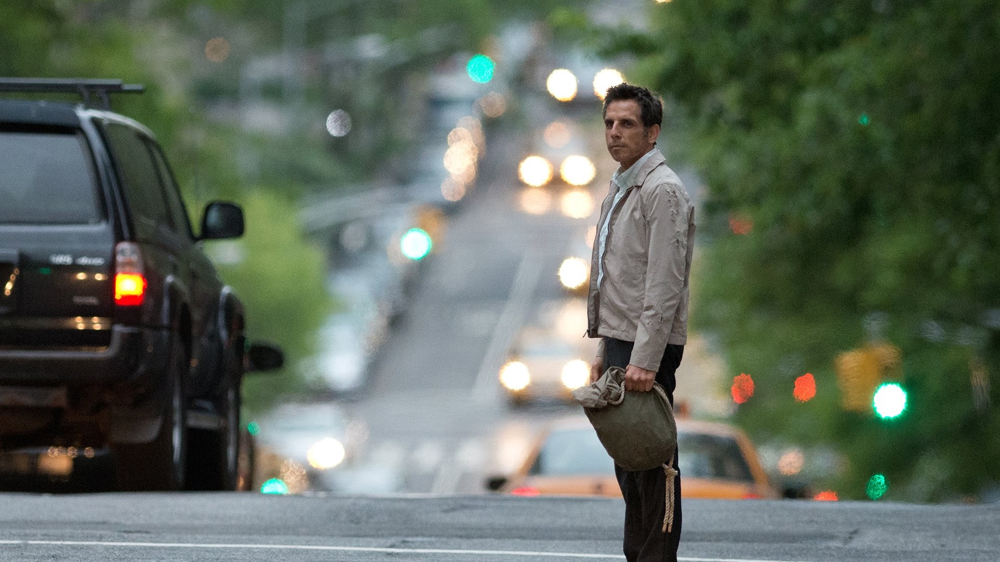
Вдохновляющая картина с невероятными пейзажами и прекрасной актёрской игрой Бена Стиллера.

Фильм, который сделал повторяющийся день известной сюжетной концепцией. Билл Мюррей убедительно играет главного героя.

Советский мюзикл про двух лучших друзей, смешные ситуации, музыку и песни.

Фильм о Формуле-1 с Брэдом Питтом. Автор отмечает съёмки, музыку и то, что после просмотра влюбился в гонки.
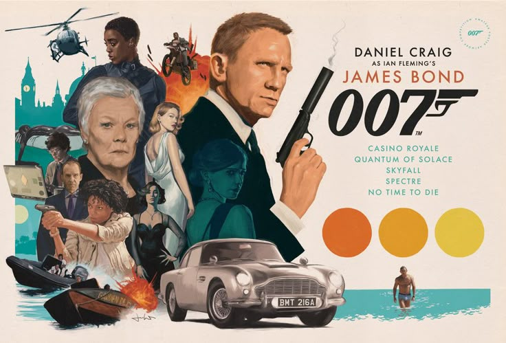
Фильмы с Дэниелом Крейгом в роли агента 007: интересный сюжет, юмор, напряжённые сцены и запоминающиеся саундтреки.
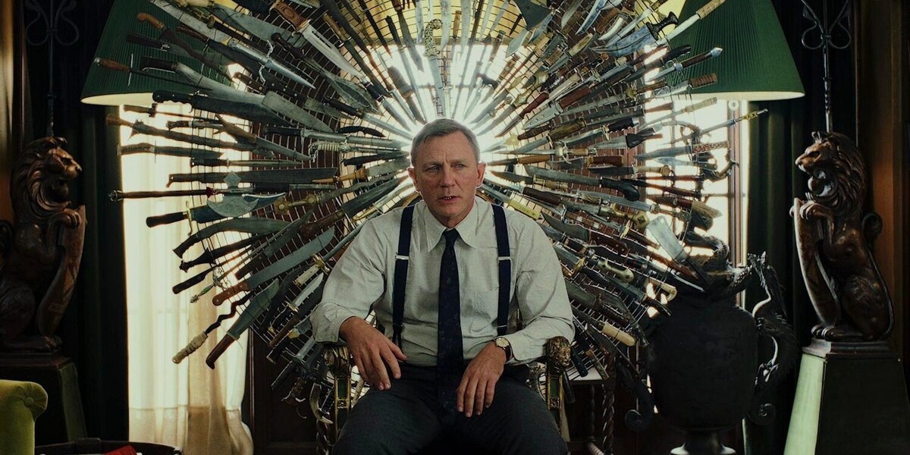
Запутанные детективы с Дэниелом Крэйгом. У каждого свидетеля есть мотив и алиби, а зритель пытается угадать убийцу.

Фильм о молодом мошеннике, который проворачивает аферы на миллионы. Автор отмечает работу Стивена Спилберга и игру Леонардо ДиКаприо.

Приключенческий фильм с красивыми пейзажами, командой спортсменов и собакой. Автору понравились юмор и актёрский состав.
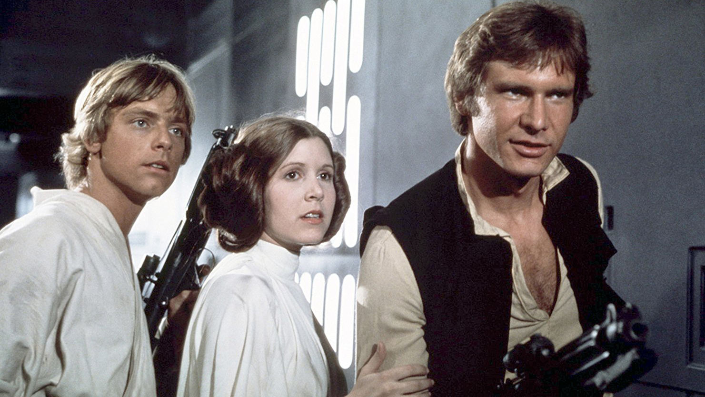
Фантастический боевик с впечатляющей для своего времени графикой, который произвёл фурор.

Фильмы Гая Ричи с клёвой операторской работой, динамичным сюжетом и запоминающимися сценами драк.
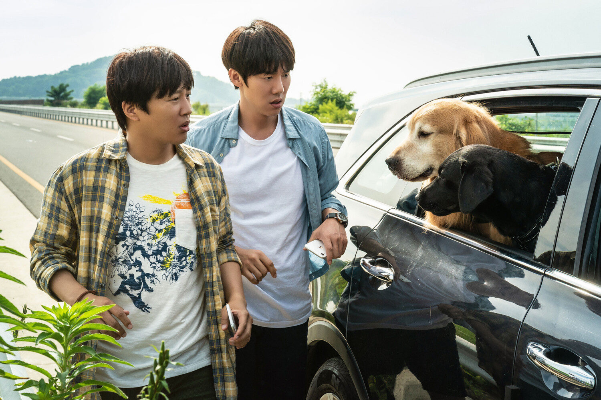
Милое роуд-муви с собаками, глубоким смыслом, забавными ситуациями и шутками.

История одиннадцати друзей, которые грабят хорошо охраняемый банк. У каждого героя своя роль.

Фильм о доблести и мести. Автор отмечает режиссуру Ридли Скотта и игру Рассела Кроу.
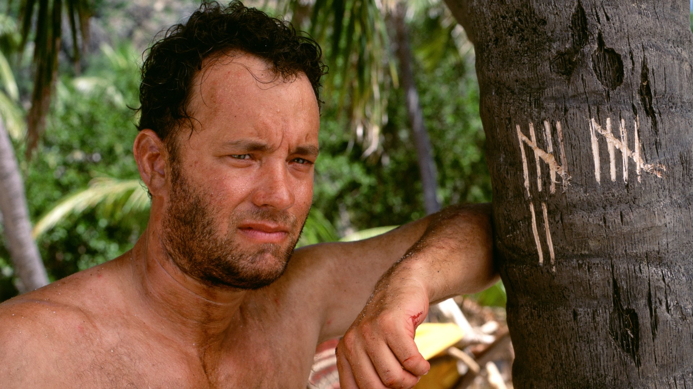
История одинокого героя в исполнении Тома Хэнкса. Картина держит в напряжении до самого конца.

Фильм о доброте и о том, что каждый взрослый всё ещё ребёнок. Автор отмечает Винни и его друзей и игру Юэна Макгрегора.

Одна из лучших комедий автора: Гайдай, запоминающиеся персонажи и множество шуток.

Очень красивый научно-фантастический фильм Кристофера Нолана с Мэттью Макконахи и Энн Хэтэуэй.
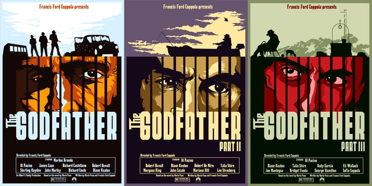
Фильмы о верности, власти, морали и долге. Первые две части занимают высокие места в рейтинге IMDb.

Необычный фильм с шикарным сюжетом, продуманными персонажами и множеством шуток.
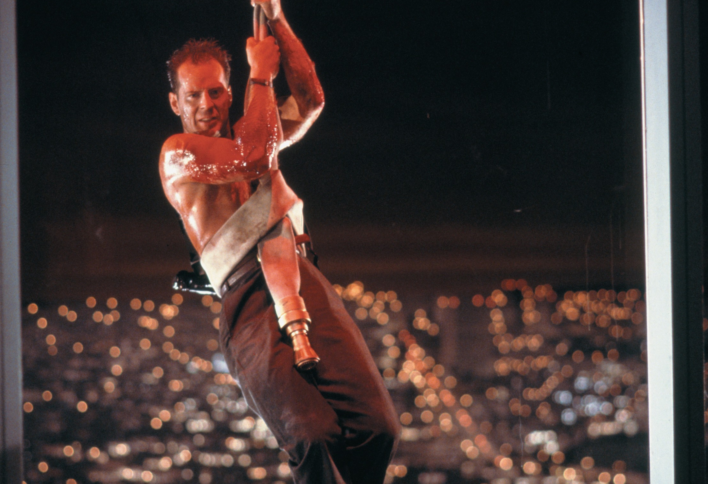
Динамичный фильм с актёрской игрой, сценами действия и шутками. Автор отдельно отмечает Алана Рикмана.
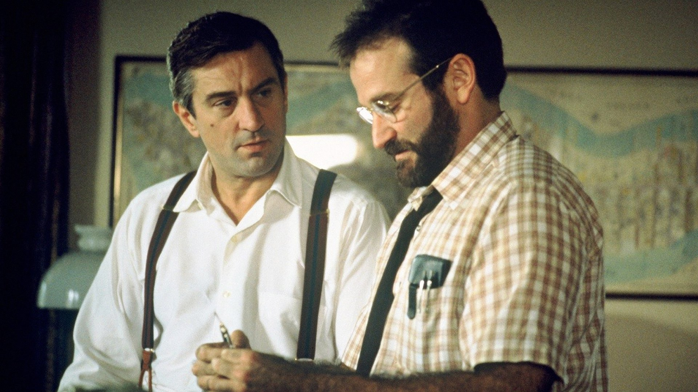
Трогательный фильм о пациентах с тяжёлым заболеванием. Автор высоко оценивает игру Роберта Де Ниро и Робина Уильямса.

Автор не стал выбирать один фильм и считает, что всю серию нужно смотреть как единое целое.
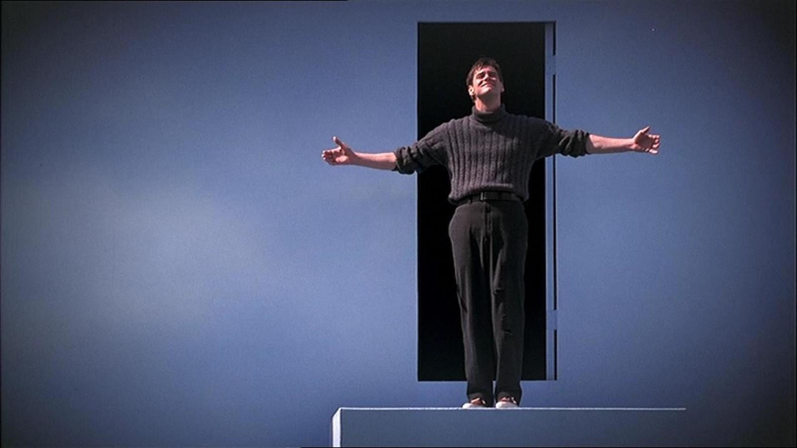
Фильм о свободе выбора и о том, что человек сам вправе решать, кем ему быть. Автор отмечает роль Джима Керри.

Захватывающая история о хоббитах в Средиземье. Автор выделяет костюмы, локации и персонажей.

Любимая комедия Гайдая: много шуток и запоминающихся персонажей.

Легендарный фильм про сны. Необычный сюжет Нолана, динамика и удивительный актёрский состав.
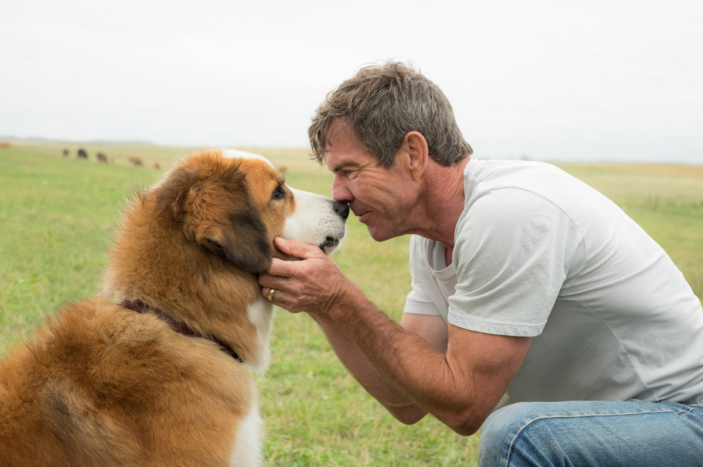
Лёгкий фильм с глубоким смыслом, добродушием и собачками.
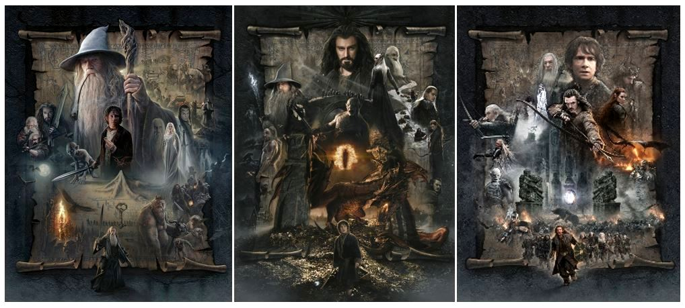
Трилогия по произведению Дж. Р. Р. Толкина с красивой картинкой, костюмами и Мартином Фрименом в роли Бильбо.

Любимая научно-фантастическая трилогия автора, которая остаётся увлекательной спустя десятилетия.

Ламповая трилогия про любителя мармелада Паддингтона, полная юмора и доброты.